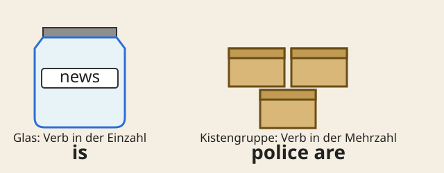

Glas oder Kistengruppe: news, advice und police
Mit einem KI-Tutor lernen
Ein KI-Tutor erklärt dir diese Seite und hilft dir bei den Aufgaben. Wähl deinen Assistenten:
Mit Claude öffnen Mit ChatGPT öffnen Mit Mistral Vibe öffnen
Du nutzt dein eigenes Konto beim Anbieter. Der Assistent ist kein Angebot von lernapps.net: lernapps liefert nur Inhalte und Aufgaben. Die Wahl gilt für alle Seiten, nur auf diesem Gerät.
Die Polizei besucht Millbrook School
Millbrook News braucht einen Artikel über den Besuch der Polizei. Lies ihn. Aus Kapitel 2 kennst du die Gläser (Nicht-Zählbares). Heute kommt die Kistengruppe dazu: eine Gruppe von Kisten, die zusammengehört.
Aufgabe
Lösung
goes richtige Antwort
Peter ist eine einzelne Person (he). Dann hängt am Verb ein -s: goes.
go
go ist die Form für I, you, we und they. Bei Peter (he) brauchst du ein -s.
going
going passt nur mit einer Form von be, zum Beispiel Peter is going.
Bei he, she, it und einem einzelnen Namen hängt am Verb ein -s. Gleich geht es darum, welche Form von be zu news und police passt.
Mehr dazu: Lernlandkarte Englisch · Kongruenz bei news und police
Das kannst du danach: Du verbindest news, information, advice und police mit dem passenden Verb.
Abschnitt 1 · Gute Nachrichten für Radfahrer Millbrook School has some good news. The police are coming to our school on Tuesday. Two police officers will talk to Year 8 about road safety. The news is exciting for many students, because lots of us cycle to school.
| Englisch | Deutsch |
|---|---|
| officer | Polizist, Polizistin |
| safety | Sicherheit |
| cycle | Rad fahren |
Abschnitt 2 · Was die Polizei rät The police have a clear message: many accidents happen in the morning. Their advice is simple. Wear a helmet, use lights and look left and right. Here is one more piece of advice: Never use your phone when you cycle.
| Englisch | Deutsch |
|---|---|
| accident | Unfall |
| helmet | Helm |
Abschnitt 3 · Mehr Informationen Information about safe routes is on a big poster in the hall. It is free, and everybody can read it. Mr Hill has some information on paper, too. Do you have any news about your own way to school? Send it to Millbrook News!
| Englisch | Deutsch |
|---|---|
| route | Weg, Strecke |
| exciting | spannend |
| free | kostenlos |
Aufgabe
Lösung
am Montag
Am Montag wird in diesem Artikel nichts erwähnt. Die Polizei kommt an einem anderen Tag.
am Dienstag richtige Antwort
Der Artikel sagt: The police are coming to our school on Tuesday.
am Freitag
Am Freitag erscheint die Zeitung, aber der Besuch ist an einem anderen Tag.
Die Polizei kommt am Dienstag.
Mehr dazu: Lernlandkarte Englisch · Kongruenz bei news und police
Aufgabe
Lösung
Abschnitt 1
Abschnitt 1 erzählt vom Besuch und davon, dass viele Schüler mit dem Rad kommen.
Abschnitt 2 richtige Antwort
In Abschnitt 2 steht der Rat der Polizei: Wear a helmet.
Abschnitt 3
Abschnitt 3 sagt, wo es mehr Informationen gibt.
Abschnitt 2 enthält den Rat: ein Helm, Licht und der Blick nach links und rechts.
Mehr dazu: Lernlandkarte Englisch · Kongruenz bei news und police
Ein Glas, eine Kistengruppe
Im Artikel steht „The news is exciting“, aber „The police are coming“. news sieht aus wie eine Mehrzahl (-s), ist aber ein Glas. police hat kein -s, steht aber mit are. news, information und advice sind Gläser: Du kannst sie nicht zählen, sie haben kein Plural-s und kein a, und das Verb steht in der Einzahl. police ist eine Kistengruppe: Das Verb steht in der Mehrzahl.

Links ein Glas (Verb in der Einzahl), rechts eine Gruppe von Kisten (Verb in der Mehrzahl).
Quelle: eigene Zeichnung. Lizenz: CC-BY-4.0.| Art | Beispiel |
|---|---|
| Glas | The water is cold. |
| Glas als Menge | a piece of furniture |
| Kistengruppe | The people are kind. |
Merke
Ein Glas bekommt kein -s und kein a: Es heißt some news, a piece of news, nicht „a news“ und nicht „informations“. Auch furniture und homework sind Gläser. Ein einzelner Polizist heißt a police officer. Bei police steht im britischen Englisch immer mit einem Verb in der Mehrzahl: The police work hard.
Übung
Aufgabe
Wähle das passende Verb.
Tipp
Frag dich, ob das Nomen ein Glas (nicht zählbar) oder eine Kistengruppe ist.
- Mr Hills Rat ist immer nützlich. → Mr Hill's advice … always useful.
- Die Information in diesem Buch ist alt. → The information in this book … old.
- Die Polizei ist vor der Schule. → The police … outside the school.
- Unsere Hausaufgabe ist heute lang. → Our homework … long today.
- Die Möbel im Raum sind neu. → The furniture in the room … new.
Lösung
- Mr Hill's advice is always useful.
- The information in this book is old.
- The police are outside the school.
- Our homework is long today.
- The furniture in the room is new.
Aufgabe
Lösung
The news are good.
news ist ein Glas. Es heißt The news is good.
The police are friendly. richtige Antwort
police ist eine Kistengruppe, darum steht are.
I have an advice for you.
advice ist ein Glas und hat kein a. Es heißt a piece of advice oder some advice.
We need some information. richtige Antwort
information ist ein Glas. Mit some ist der Satz richtig.
Gläser (news, advice, information) bleiben in der Einzahl und haben kein a. police nimmt das Verb in der Mehrzahl.
Mehr dazu: Lernlandkarte Englisch · Kongruenz bei news und police
Aufgabe
Lösung
Richtige Antwort: ein einzelner Rat – a piece of advice; ein einzelner Polizist – a police officer; viele Informationen – a lot of information; eine einzelne Neuigkeit – a piece of news
Bei Gläsern zählst du mit a piece of. Bei police sagst du für eine Person a police officer.
Mehr dazu: Lernlandkarte Englisch · Kongruenz bei news und police
Aufgabe
Schreibe den Satz auf Englisch, ohne Kurzformen.
Tipp
Glas oder Kistengruppe? Danach wählst du das Verb.
- Die Nachrichten sind schlecht (bad).
- Die Polizei ist hier.
- Das ist ein guter Rat.
- Ich brauche eine Information.
Lösung
- The news is bad.
- The police are here.
- That is good advice. (auch richtig: That is a good piece of advice.)
- I need some information. (auch richtig: I need a piece of information.; I need a bit of information.; I need information.)
Aufgabe
Lösung
Richtige Antwort: Die Aussage stimmt nicht.
information ist ein Glas und hat kein Plural-s. Es heißt three pieces of information.
Mehr dazu: Lernlandkarte Englisch · Kongruenz bei news und police
Aufgabe
Hör zu und schreibe den ganzen Satz auf.
Tipp
Achte auf das Verb nach dem Nomen. Ist es is oder are?
- KI
- KI
- KI
Lösung
- The news is on the radio at six.
- Her advice is very helpful.
- The police are at the station.
Selbst sagen und schreiben
Aufgabe
Hör zu, sprich nach und nimm dich auf. Vergleiche dann mit dem Original.
Tipp
Hör den Satz zuerst. Sprich dann langsam nach und achte auf das Verb nach dem Nomen.
- We need more information today.KI
- Is the news good today?KI
- Good advice is useful.KI
Zum Aufnehmen braucht diese Aufgabe JavaScript. Die Beispiele kannst du auch ohne anhören.
Lösung
- We need more information today.
- Is the news good today?
- Good advice is useful.
Offene Aufgabe
Millbrook News fragt: Welchen Rat gibst du Radfahrern? Schreibe zwei bis drei Sätze für die Zeitung (zum Beispiel: My advice is simple. Look left and right.)
Eine gute Antwort enthält:
Lösung
My advice is to use lights. The police like helmets. A helmet is useful.
Rückblick auf die App
Die erste Ausgabe von Millbrook News ist fertig. Du kannst jetzt Dinge mit Etiketten benennen, aus Kisten viele machen, mit this und that zeigen, Mengen angeben, mit there is und there are sagen, was es gibt, Orte und Zeiten mit in, on und at nennen, und du weißt, wann die Kiste kein Etikett braucht und welches Verb zu einem Glas oder einer Kistengruppe passt.
Fehler gefunden oder eine Idee für diese App?